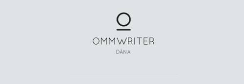

OmmWriter Dana I ve II bilgisayarda yazı yazarken, kafasındaki düşünceler ile bilgisayarı arasına dikkat dağıtıcı hiç bir unsurun girmesini istemeyen minimalistik bilgisayar kullanıcıları için tasarlanmış bir text editor. ChromaTherapy adı verilen arkaplanlar ve relaxing ses tonları ile bilgisayar başında yazı yazmayı dinlendirici ve zevkli bir hale getiriyor. Şimdilik sadece MacOS versionu bulunan OmmWriter Dana I ve II’nin yakın gelecekte Windows versionununda hazırlanması bekleniyor.
Bilgisayarda yazı yazmak zordur. Yazı yazmak için kullandığınız program size tam istediğiniz sonucu vermek için çok sayıda özellik sunar. Büyük çoğunluğunu kullanmayı bile bilmediğimiz özellikler sürekli gözümüzün önünde toolbar’larda kullanılmayı bekler.
Bilgisayarınızın başına birşeyler yazmak için oturduğunuzda arkaplanda pekçok uygulama çalışır. Yeni bir mail iletisi aldığınızda bilgisayarınız sizi uyarır. Dinlediğiniz şarkı değiştiğinde farklı bir uyarı alırsınız. Twitter clientleri saymıyorum bile. Kısacası bilgisayar başına birşeyler yazmak için oturduğunuzda dikkatinizi dağıtan çok sayıda unsur vardır. Konsantre olmak zordur.
OmmWriter’ı kullanmaya başlayana kadar gerçekten ne kadar çok şeyin dikkatimi dağıttığını fark etmemiştim. OmmWriter bütün dikkat dağıtıcıları programı kapatana kadar geçici bir süre kullanım dışı bırakıyor. Tüm ekranı kaplayan basit bir  text editor, arka planda çalan relax edici müzik tonları ile kafanızdaki düşünceler ve bilgisayarınız arasına hiçbir dikkat dağıtıcı unsur giremiyor.
Windows versionu henüz planlanma aşamasındaki programın tüm özelliklerini denemek ücretsiz, buna karşılık chromatherapy arkaplanlar için sonu 1 ile biten (4.11 US$ veya 4.91 US$) herhangi bir ücret ödeyerek Dana II sürümünü satın almak gerekiyor.